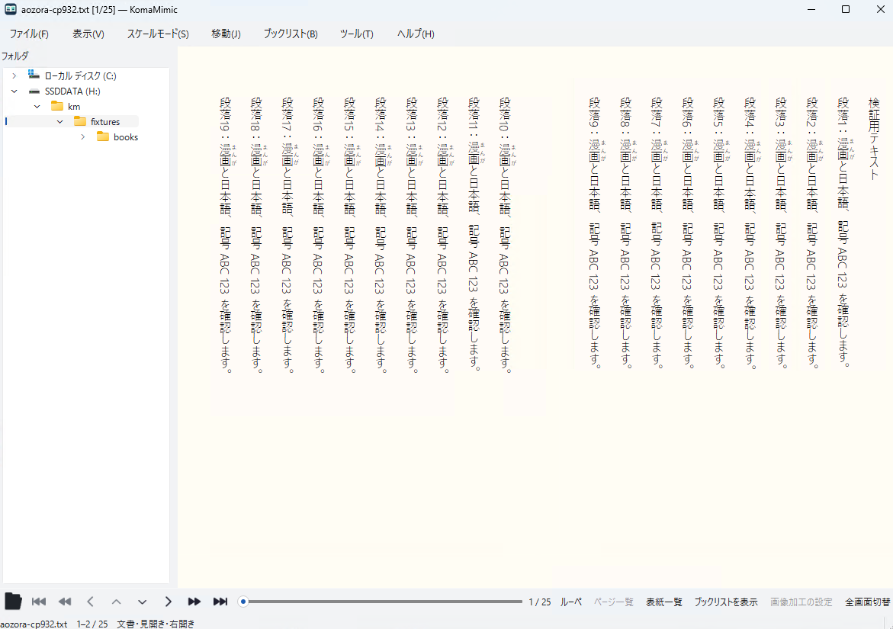
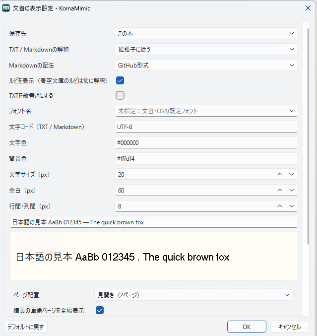

TXT・Markdown・EPUBを読む
日本語 | English
これらの形式は共通の文書ビューで読みます。TXTの青空文庫ルビにも対応します。 書庫にTXT/Markdownが入っている場合は、書庫内の一覧から文書を選んで開きます。 画像だけの書庫は直接画像の読書画面になります。

表示設定
「表示 → 文書 → 文書の表示設定…」でフォント、文字サイズ、行間、配色、縦書き／横書き、 ページ配置を選びます。設定の保存先は本別・形式別・全体です。本別を優先し、指定がない項目は 形式別、全体へ順に引き継ぎます。フォント名の空欄は文書・OSの既定に従います。

単ページ／見開きは設定画面のページ配置、または Space で切り替えます。
Spaceによる変更はその本に記憶し、画像側の見開き既定値は変えません。
横長の画像だけのページは、既定で分割せず全幅に収めます。
EPUBでは「EPUBの表紙を単ページにする」が既定で有効です。本文の読書順にある表紙を
中央に1ページで表示し、本文の見開き設定を保ちます。表紙が本文にない場合は追加しません。
TXT・青空文庫・Markdownの先頭を表紙とはみなしません。
可変レイアウトの本文で縦書き・横書きを指定すると、見開きの読む順序もそれぞれ 右から左・左から右へ切り替わります。「文書に従う」ではEPUBの明示された順序を使い、 指定がない場合は本文の組方向から決めます。固定レイアウトの組方向は変更しません。
EPUBは現在の章から表示し、未読の章は移動時に準備します。総ページ数が未確定の間は ページ総数を「…」で表示します。開くと直接文書ビューへ入り、表紙も同じビューで表示します。 読込中も前後の本へ移動でき、直前の文書の表示状態を1冊だけ再利用します。 元ファイルや文書設定が変わった場合は読み直します。
読書位置は本文の位置として保存し、文字サイズやウィンドウ寸法を変えた後も近い位置を復元します。 目次・検索・文字サイズ・組方向は「表示 → 文書」から操作できます。
キーの上書き
ショートカット設定で「文書用のキー設定を表示」を有効にすると、共通キーを使う、 別キーを使う、割当なしを選べます。画像側のキーは上書きしません。 文字サイズ変更と画像の拡大縮小は別の操作です。
制限
EPUB全体の展開後合計サイズによる読込制限はありません。内部の画像・本文などは 1ファイルあたり展開後32 MiBまで、ファイル数は10,000件までです。
固定レイアウト・画像内の文字ではフォントや文字サイズを変更できません。 DRMで暗号化された本文・画像は読めません。書籍のJavaScriptは実行せず、 外部サイトや文書の範囲外にある画像を自動取得しません。 文書のページサムネイル、画像加工、ページ編集、ラスタ出力、印刷は対象外です。